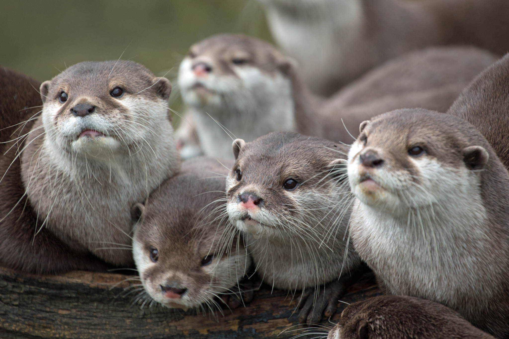
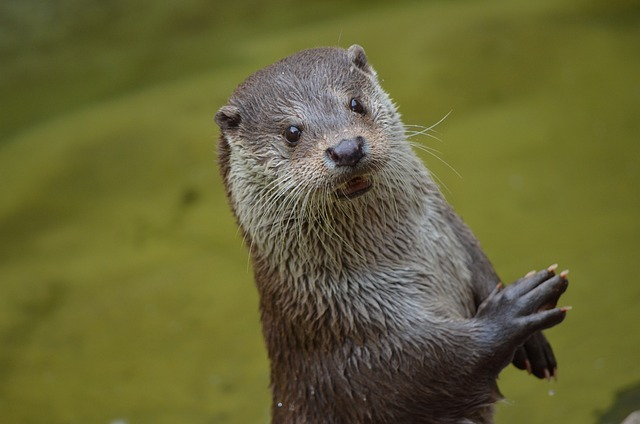
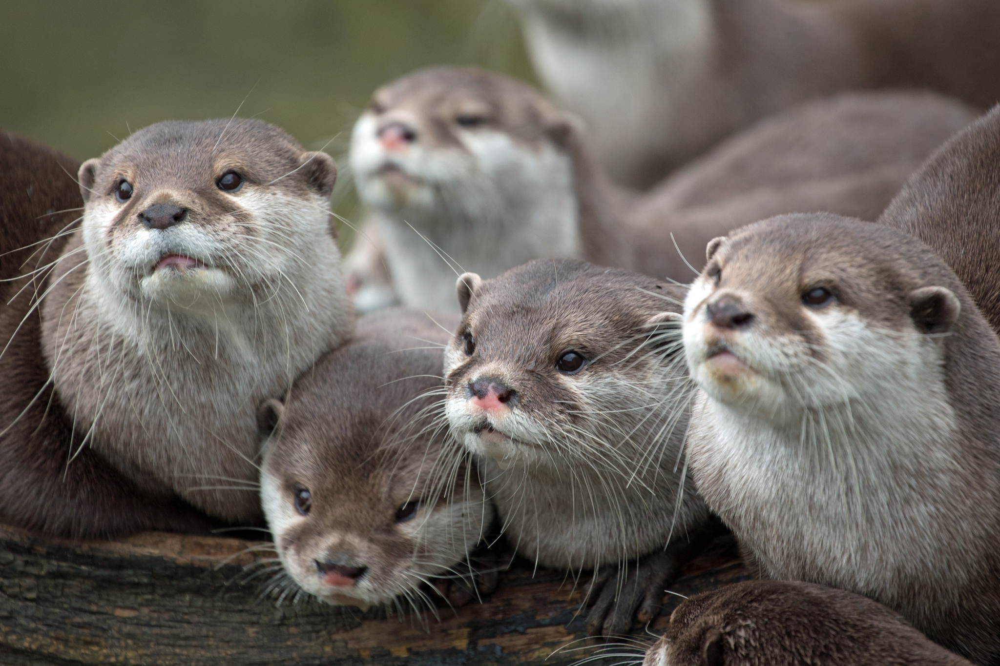
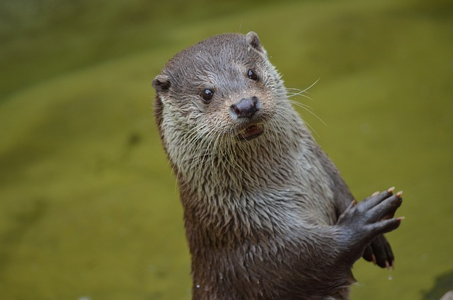

BUENAS NUTRITARDES

| nutricaracteristicas | nutridescripcion |
|---|---|
| Nombre científico | Lutra lutra |
| Familia | Mustelidae |
| Hábitat | Ríos, lagos, costas y marismas |
| Dieta | Peces, crustáceos,moluscos y anfibios |
| Longitud | Hasta 1,3 metros |
| Peso | Entre 5 y 15 kg |
| Esperanza de vida | 10-15 años en libertad,hasta 20 en cautiverio |
| Estado de conservación | Dependiendo de la especie,algunas están en peligro de extinción |
 
